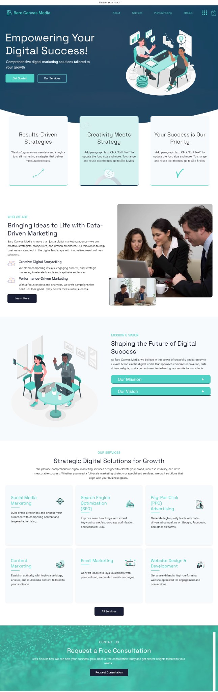

Real project · Marketing agency · Wix Studio
Bare Canvas Media
A modern digital-marketing website built to make the offer easier to scan while preserving a distinctive visual presentation.
Project context
The business needed a polished digital presence that could communicate its marketing offer without letting the visual design overwhelm the service message.
The friction
Agency sites can easily become visually impressive but vague about the offer, which makes the visitor work too hard to understand why they should continue.
Key design decisions
- Use visual hierarchy to support the offer instead of competing with it.
- Separate the main proposition from supporting services and proof.
- Keep next actions visible as the visitor moves through the presentation.
What changed in the journey
The site presents a stronger offer hierarchy while retaining the more expressive Wix Studio visual language.
Apply the thinking
The next project should solve its own customer decision, not copy this design.
This case study is evidence of the process. Your site should use the layout, interaction and feature logic that fits your own customer journey.